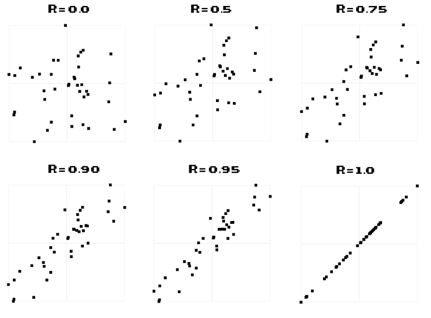

A PROPOS DU JEU
Le but du jeu est simple : il faut essayer de deviner la corrélation entre les deux variables d'un nuage de points. Plus votre estimation est proche de la vraie corrélation, mieux c'est.
Votre estimation doit être comprise entre 0 et 1, où 0 correspond à aucune corrélation et 1 correspond à une corrélation parfaite.
Aucune corrélation négative n'est utilisée dans le jeu.
Voici quelques exemples:
|  |
On suppose que la corrélation est un jeu avec un but. Cela signifie que, bien qu'il se veut divertissant, des données sur les suppositions sont collectées et utilisées pour analyser la façon dont nous percevons les corrélations dans les nuages de points.
Donc plus il y a de gens qui jouent, plus de données sont générées!
RULES
Si vous devinez à moins de 0,05 de la vraie corrélation: +1 vie et +5 pièces.
Si vous devinez à moins de 0,10 de la vraie corrélation: +1 pièce.
Si vous devinez à > 0,10 de la vraie corrélation: -1 vie.
Vous recevrez également des pièces bonus si vous faites de bonnes suppositions d'affilée!
A PROPOS DE MOI
Je suis doctorant en bioinformatique à l'université de Cambridge et à l'institut européen de bioinformatique. Ce jeu est un projet parallèle pour nourrir l'une de mes nombreuses curiosités quotidiennes.
Je suis toujours reconnaissant pour les suggestions et heureux de répondre aux questions sur le jeu ou sur la manière dont les données seront utilisées. Alors tweetez-moi à @omarwagih ou envoyez-moi un courriel.
AVERTISSEMENT D'UTILISATION ET DÉCLARATION DE CONFIDENTIALITÉ
L'analyse des données résultantes repose sur de véritables suppositions humaines. S'il vous plaît, ne vous efforcez pas de deviner à plusieurs reprises et systématiquement la corrélation correcte (par exemple en utilisant des bots). Cela enlève le plaisir des autres utilisateurs en spammant le tableau de bord. il est également facile d'identifier les utilisateurs qui font cela à partir des données et d'effacer leur nom du tableau de score. Cela étant dit, si vous trouvez un bug ou quelque chose qui ne fonctionne pas comme prévu, envoyez-moi un e-mail pour que je puisse le régler.
Les informations suivantes seront automatiquement stockées à distance chaque fois que vous faites une estimation de corrélation: date et heure actuelles, adresse IP et données de corrélation. Ces données sont évaluées à des fins purement statistiques sous une forme anonyme. Si vous ne consentez pas à fournir de telles informations ou à fournir des données, veuillez vous abstenir de jouer.
Pour plus d'informations sur la manière dont les données seront utilisées, n'hésitez pas à m'envoyer un e-mail.